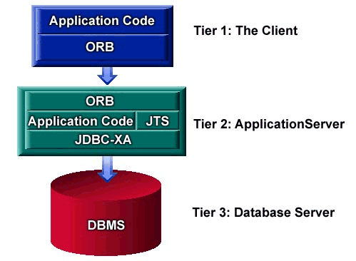

| Reference | Help | Introduction | Slide Show | Class Hierarchy | InterClient | ||
| PREV | NEXT | FRAMES | NO FRAMES | ||
 For a final look at database application architecture, let's look at your typical CORBA application of the future. I say future, because the JDBC-XA specification has not yet been released. XA is an X/Open distributed transaction specification and an XA enabled driver will allow an ORB to control transactions across heterogeneous data sources, even non-jdbc data sources, using a transaction manager known as the java transaction service (JTS) which manages your xa resources.
JTS is a specification from javasoft that is one of the upcoming enterprise apis in the java extension packages, and is a java mapping of the OMG standard for an Object Transaction Service (OTS). Visibroker has its own integrated object transaction service which is operational today.
This same architecture could be used with enterprise java beans communicating via RMI rather than using an orb. Enterprise java beans is a server-side component model, or beans for the middle and server tiers. CORBA uses a language-neutral RPC based communication protocol, but there's considerable setup managing your client stubs and IDLs, as well as maintaining your ORB.
Enterprise Java Beans (EJBs) will be compatible with CORBA.
| Reference | Help | Introduction | Slide Show | Class Hierarchy | InterClient | ||
| PREV | NEXT | FRAMES | NO FRAMES | ||